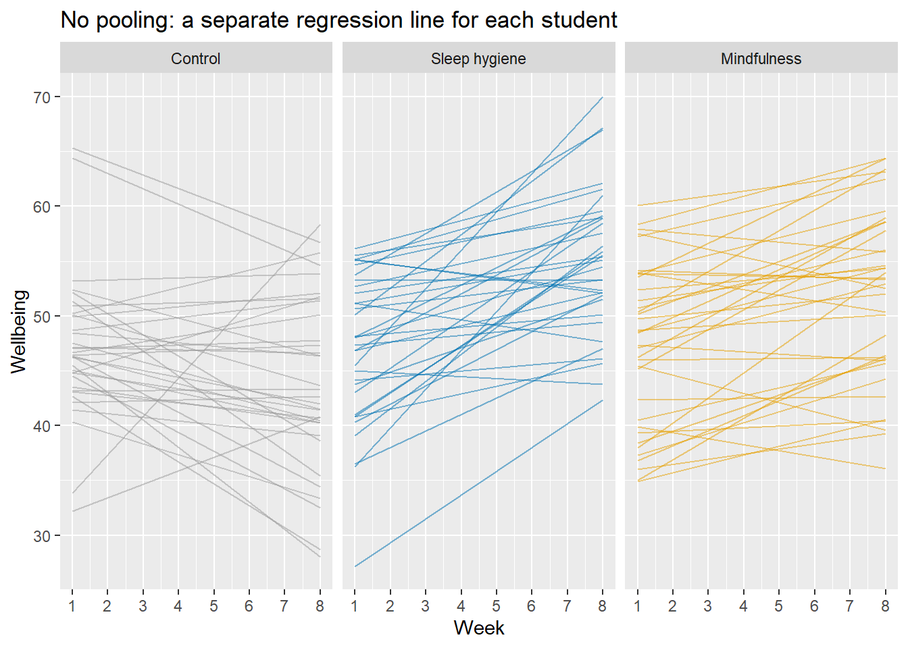
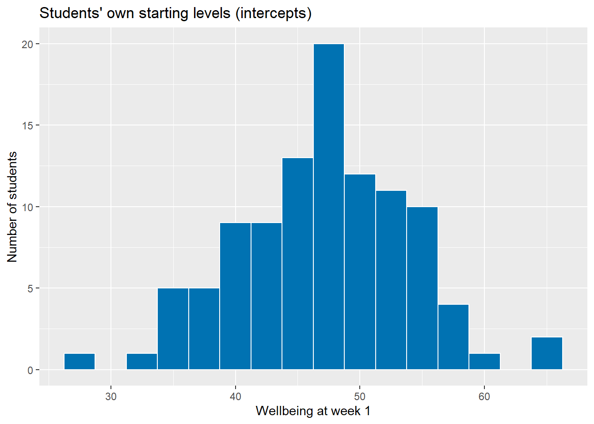
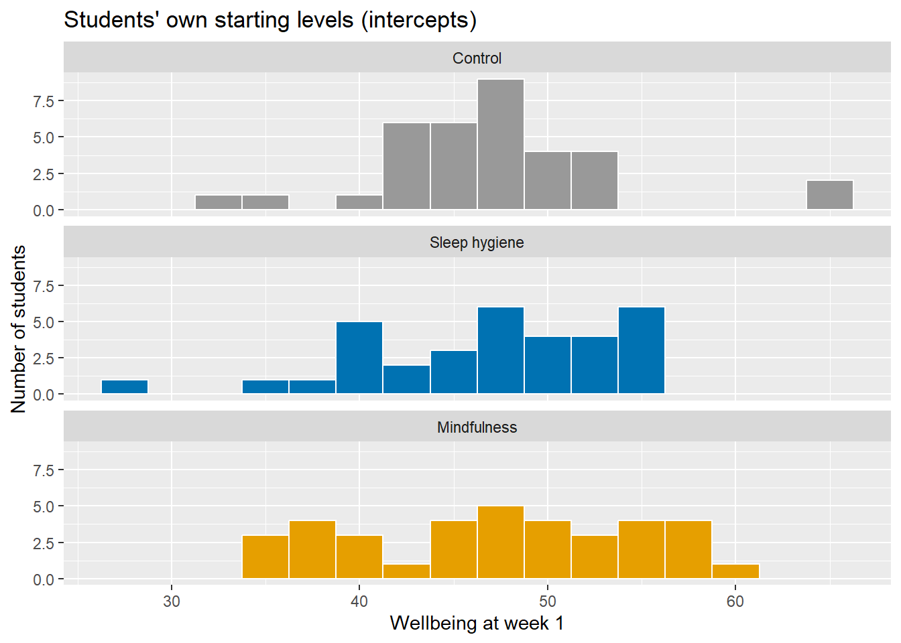
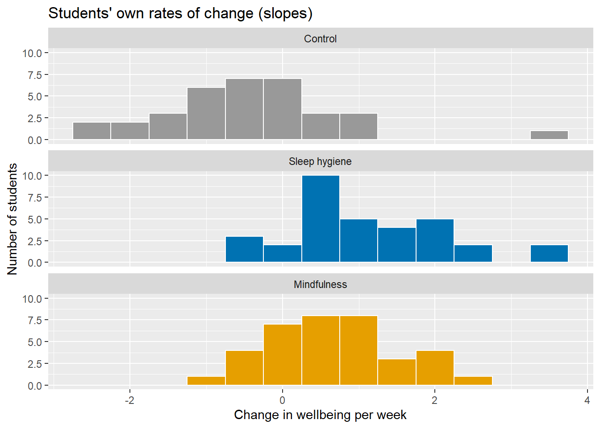
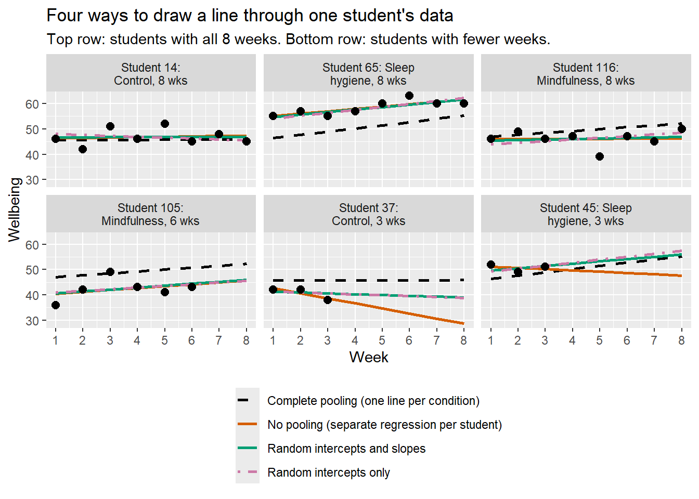
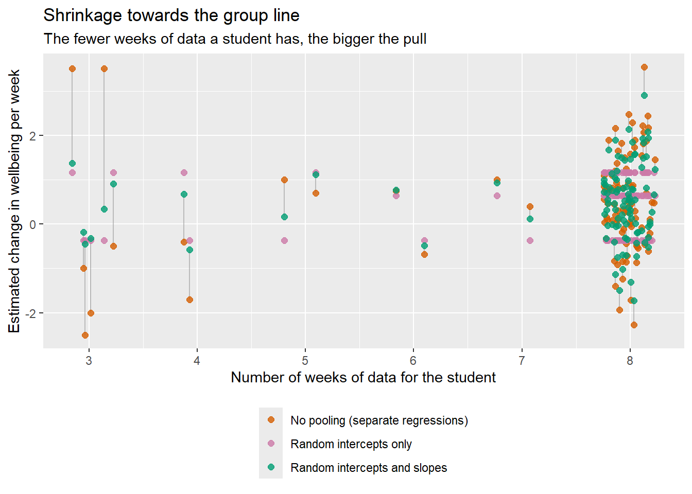
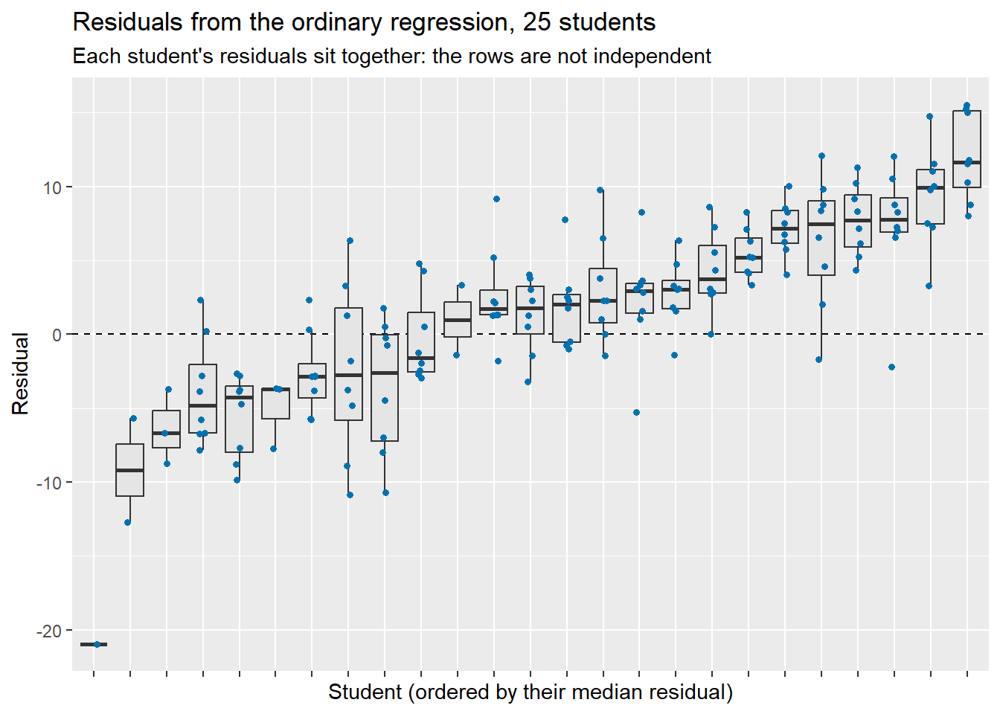

df <- read.csv("sleep_study_mixed.csv")PS71020_Unit6_Prep
Linear Mixed Effects Models 1
TODO ### Learning Outcomes:
1 - Use RStudio to carry out simple linear regressions that include categorical, as well as continuous, predictors
2 - Understand how dummy coding works for categorical predictors in regression
3 - Carry out regression with a moderator (interaction) term in various ways
4 - Enter predictors hierarchically in regression models
TODO ### Materials Used:
We will use the packages interactions and knitr these are already installed on the RStudio Server but if you are working on your own Laptop you may need to install them.
NoteSome general notes about the weekly labs
You should go through the worksheet during the lab and try to complete as much of it during the lab as you can. You can work on the sheet individually or in small groups during the lab. Try to answer the lab worksheet questions in your own words however. If you are unable to finish the worksheet during the class, try to finish it outside class time. Try to attempt the answer before using the ‘Show Answer’ button.
As you go through the sheet, copy the relevant lines of code to your own analysis script.
A complete model answers script will be available on the VLE page from Fridays after the labs so you can check your own answers.
If you have any queries during the class, please feel free to ask your lab tutors. If your question relates specifically to the lecture content or the homework sheets, please contact Peter Holland by email or use the forum on the VLE page.*
CREATE A NEW PROJECT
Just as we did in previous weeks we are going to start by creating a new project for this week’s lab. Download the data from the VLE (In the Week 5 Lab Materials section) and then copy it in the folder you created your project in. You can also find a direct download link for the data here: Github Link.
If you are working on the RStudio Server, then you will need to download the file to your computer and then upload it to the correct folder on the server.
Also create a new script in this folder so you can copy the lines of code needed to run this analysis yourself using just that script.
SECTION A. THE DATASET
The dataset is a more advanced version of the one that was discussed in the Week 1 Lecture when we discussed ways of plotting data.
120 students take part in an 8-week study. Randomly assigned to one of three conditions: a sleep hygiene programme, a mindfulness app, a control group.
Each week they log their wellbeing scores. We are interested in: Do wellbeing scores change over time Does the condition they are in effect wellbeing scores.
However, as with many real world longitudinal data sets some students have dropped out of the study so we have missing data.
First we read the data.
Our next step is to convert this data to long format:
# Wide to long, exactly as in 03_plots_ggplot2.R. values_drop_na = TRUE drops the
# empty cells left by students who dropped out, so each row is a real observation.
library(tidyr)
df_long <- pivot_longer(df,
cols = week_1:week_8,
names_to = "week",
names_prefix = "week_",
names_transform = as.integer,
values_to = "wellbeing",
values_drop_na = TRUE)Now we can set up our variables as factors as we have done previously:
cond_levels <- c("Control", "Sleep hygiene", "Mindfulness")
df_long$condition <- factor(df_long$condition, levels = cond_levels)
df$condition <- factor(df$condition, levels = cond_levels)In the long version of the data we are also going to make one other change, we are going to subtract 1 from all of the values in df_long$week and create a new varaible called df_long$week0. We are doing this as we want the first week to act as the reference level (and intercept) when we perform our regressions See XXX for when we did something similar for dummy coding.
# week0 = week - 1, so that week0 = 0 is the start of the study and the intercept
# means "wellbeing at week 1". (Centring time is a decision we always have to make.)
df_long$week0 <- df_long$week - 1We can now check how many students completed the study. If you notice in the code when we used the pivot_longer() function we included an optional input argument values_drop_na = TRUE, this told R to remove any data points that were NA and not include those in the long version.
# How many observations does each student have?
n_obs <- table(df_long$id)
#this prints the number of weeks in the top row, and the number of students with that many weeks data in the row below
table(n_obs) n_obs
1 2 3 4 5 6 7 8
6 11 6 2 2 2 2 89 #we will also add this as a new variable to our df_long data frame
df_long$n_obs <- as.integer(n_obs[as.character(df_long$id)])If we check the first few rows of our df_long dataframe we can see what this all looks like and that our first student completed all 8 weeks.
head(df_long)# A tibble: 6 × 6
id condition week wellbeing week0 n_obs
<int> <fct> <int> <int> <dbl> <int>
1 1 Control 1 42 0 8
2 1 Control 2 44 1 8
3 1 Control 3 41 2 8
4 1 Control 4 41 3 8
5 1 Control 5 40 4 8
6 1 Control 6 37 5 8This line of code just set’s up some reproducible colours for plotting:
cond_cols <- c("Control" = "#999999", "Sleep hygiene" = "#0072B2", "Mindfulness" = "#E69F00")We will use some code to produce a “spaghetti plot”. This is the single most useful plot for repeated-measures data. Notice that:
students start at very different heights,
their slopes differ,
some lines stop early (dropout).
library(ggplot2)
ggplot(df_long, aes(x = week, y = wellbeing, group = id)) +
geom_line(alpha = 0.3, colour = "grey40") +
stat_summary(aes(group = condition, colour = condition),
fun = mean, geom = "line", linewidth = 1.5) +
facet_wrap(~ condition) +
scale_colour_manual(values = cond_cols) +
scale_x_continuous(breaks = 1:8) +
labs(title = "Every student's wellbeing over the 8 weeks",
subtitle = "Thick line = group mean of the students observed that week",
x = "Week", y = "Wellbeing") +
theme(legend.position = "none")
SECTION B. REGRESSION PER STUDENT
One approach to analysing data like this would be to fit a separate regression to each student and get the slope of the line over weeks and the intercept (their score at week 0)
The function below does this:
fit_one_student <- function(d) {
if (nrow(d) < 3) {
return(data.frame(id = d$id[1], intercept = NA, slope = NA, n_obs = nrow(d)))
}
b <- coef(lm(wellbeing ~ week0, data = d))
data.frame(id = d$id[1], intercept = b[[1]], slope = b[[2]], n_obs = nrow(d))
}person_fits <- do.call(rbind, lapply(split(df_long, df_long$id), fit_one_student))
person_fits$condition <- df$condition[match(person_fits$id, df$id)]
head(person_fits) # 120 little regressions: one intercept and one slope each id intercept slope n_obs condition
1 1 44.50000 -1.7142857 8 Control
2 2 52.16667 -1.9404762 8 Control
3 3 45.50000 -2.5000000 3 Control
4 4 45.04762 -0.6857143 6 Control
5 5 53.16667 0.0952381 8 Control
6 6 64.41667 -1.4047619 8 ControlWe need a minimum of 3 weeks of data to fit a lm model so check how many satisfy this:
# Students with only 1 or 2 observations have NA here: we can't fit a line to them.
# (Remember this: the mixed model WILL be able to say something about them.)
fits_ok <- person_fits[!is.na(person_fits$slope), ]
nrow(fits_ok) # students we could fit separately[1] 103We can now plot the fits for each student:
# Draw all the separate lines
ggplot(fits_ok) +
geom_segment(aes(x = 1, xend = 8,
y = intercept, yend = intercept + 7 * slope,
colour = condition), alpha = 0.5) +
facet_wrap(~ condition) +
scale_colour_manual(values = cond_cols) +
scale_x_continuous(breaks = 1:8) +
labs(title = "No pooling: a separate regression line for each student",
x = "Week", y = "Wellbeing") +
theme(legend.position = "none")
We can see how much variability we have in the intercepts:
# How much do the intercepts and slopes vary?
ggplot(fits_ok, aes(x = intercept)) +
geom_histogram(binwidth = 2.5, fill = "#0072B2", colour = "white") +
labs(title = "Students' own starting levels (intercepts)",
x = "Wellbeing at week 1", y = "Number of students")
Also can do this split by condition, remember that condition was randomly assigned so hopefully these won’t be too different:
#same but split by group
ggplot(fits_ok, aes(x = intercept, fill = condition)) +
geom_histogram(binwidth = 2.5, colour = "white") +
facet_wrap(~ condition, ncol = 1) +
scale_fill_manual(values = cond_cols) +
labs(title = "Students' own starting levels (intercepts)",
x = "Wellbeing at week 1", y = "Number of students") +
theme(legend.position = "none")
However, if we look at the slope values split by condition:
ggplot(fits_ok, aes(x = slope, fill = condition)) +
geom_histogram(binwidth = 0.5, colour = "white") +
facet_wrap(~ condition, ncol = 1) +
scale_fill_manual(values = cond_cols) +
labs(title = "Students' own rates of change (slopes)",
x = "Change in wellbeing per week", y = "Number of students") +
theme(legend.position = "none")
Two ideas to take away: - Intercepts and slopes really do vary between students: a model with ONE line per group (ordinary regression) ignores this. BUT these separate slopes are noisy: a line through 3 or 4 points is very unreliable (see how wide the slope histograms are, much wider than the real spread of slopes). Part of the spread is real variation, part of it is estimation error.
We can also model this using a simple regression, in this case we ignore which student the data comes from and just look at the effect of condition:
# Ignores which student each row belongs to. Everyone in a condition gets the same line.
m_complete <- lm(wellbeing ~ week0 * condition, data = df_long)library(lmerTest)Loading required package: lme4Loading required package: Matrix
Attaching package: 'Matrix'The following objects are masked from 'package:tidyr':
expand, pack, unpack
Attaching package: 'lmerTest'The following object is masked from 'package:lme4':
lmerThe following object is masked from 'package:stats':
step#We can also fit a model that allows students to have their own intercept (1 | id)
m_intercepts <- lmer(wellbeing ~ week0 * condition + (1 | id), data = df_long)
summary(m_intercepts)Linear mixed model fit by REML. t-tests use Satterthwaite's method [
lmerModLmerTest]
Formula: wellbeing ~ week0 * condition + (1 | id)
Data: df_long
REML criterion at convergence: 4612.4
Scaled residuals:
Min 1Q Median 3Q Max
-2.8275 -0.6460 -0.0162 0.6079 3.0660
Random effects:
Groups Name Variance Std.Dev.
id (Intercept) 43.69 6.610
Residual 11.53 3.395
Number of obs: 802, groups: id, 120
Fixed effects:
Estimate Std. Error df t value Pr(>|t|)
(Intercept) 45.39393 1.10707 127.62541 41.004 < 2e-16
week0 -0.36980 0.09892 691.24407 -3.738 0.000201
conditionSleep hygiene 0.65895 1.56623 127.77692 0.421 0.674664
conditionMindfulness 1.24765 1.56550 127.50100 0.797 0.426953
week0:conditionSleep hygiene 1.53704 0.13774 690.87014 11.159 < 2e-16
week0:conditionMindfulness 1.01450 0.13250 687.26088 7.656 6.5e-14
(Intercept) ***
week0 ***
conditionSleep hygiene
conditionMindfulness
week0:conditionSleep hygiene ***
week0:conditionMindfulness ***
---
Signif. codes: 0 '***' 0.001 '**' 0.01 '*' 0.05 '.' 0.1 ' ' 1
Correlation of Fixed Effects:
(Intr) week0 cndtSh cndtnM wk0:Sh
week0 -0.242
cndtnSlphyg -0.707 0.171
cndtnMndfln -0.707 0.171 0.500
wk0:cndtnSh 0.174 -0.718 -0.242 -0.123
wk0:cndtnMn 0.181 -0.747 -0.128 -0.247 0.536Alternatively using a mixed model approach we can give every student their own intercept and their own slope in the fitting process.
However, both the slope estimates and the intercept estimates are normally distributed
# (1 + week0 | id) = "every student gets their own intercept AND their own slope,
# but these come from a common distribution".
# Students with lots of data are estimated mostly from their own data.
# Students with little data are pulled ("shrunk") towards their group's line.
m_partial <- lmer(wellbeing ~ week0 * condition + (1 + week0 | id), data = df_long)
summary(m_partial)Linear mixed model fit by REML. t-tests use Satterthwaite's method [
lmerModLmerTest]
Formula: wellbeing ~ week0 * condition + (1 + week0 | id)
Data: df_long
REML criterion at convergence: 4526.7
Scaled residuals:
Min 1Q Median 3Q Max
-2.49770 -0.60761 0.01688 0.53594 3.07728
Random effects:
Groups Name Variance Std.Dev. Corr
id (Intercept) 51.6198 7.1847
week0 0.5443 0.7378 -0.44
Residual 8.5740 2.9281
Number of obs: 802, groups: id, 120
Fixed effects:
Estimate Std. Error df t value Pr(>|t|)
(Intercept) 45.3183 1.1799 115.5342 38.408 < 2e-16 ***
week0 -0.2883 0.1568 101.9729 -1.839 0.0688 .
conditionSleep hygiene 0.7158 1.6689 115.5788 0.429 0.6688
conditionMindfulness 1.2860 1.6680 115.3331 0.771 0.4423
week0:conditionSleep hygiene 1.4805 0.2197 100.0192 6.738 1.04e-09 ***
week0:conditionMindfulness 0.9616 0.2125 97.3446 4.525 1.71e-05 ***
---
Signif. codes: 0 '***' 0.001 '**' 0.01 '*' 0.05 '.' 0.1 ' ' 1
Correlation of Fixed Effects:
(Intr) week0 cndtSh cndtnM wk0:Sh
week0 -0.435
cndtnSlphyg -0.707 0.307
cndtnMndfln -0.707 0.308 0.500
wk0:cndtnSh 0.310 -0.714 -0.435 -0.219
wk0:cndtnMn 0.321 -0.738 -0.227 -0.444 0.526We can use the code below to show what some of these different estimates look like for a sample of our students:
set.seed(7)
choose_student <- function(cond, complete) {
pf <- person_fits[person_fits$condition == cond & person_fits$n_obs >= 3, ]
pf <- if (complete) pf[pf$n_obs == 8, ] else pf[pf$n_obs == min(pf$n_obs), ]
pf$id[sample.int(nrow(pf), 1)]
}
chosen <- c(sapply(cond_levels, choose_student, complete = TRUE),
sapply(cond_levels, choose_student, complete = FALSE))
grid <- expand.grid(id = chosen, week0 = 0:7)
grid$condition <- factor(df$condition[match(grid$id, df$id)], levels = cond_levels)
grid$n_obs <- person_fits$n_obs[match(grid$id, person_fits$id)]
grid$`Random intercepts only` <- predict(m_intercepts, newdata = grid)
grid$`Complete pooling (one line per condition)` <- predict(m_complete, newdata = grid)
grid$`Random intercepts and slopes` <- predict(m_partial, newdata = grid) # includes each student's random effects
pf_match <- match(grid$id, person_fits$id)
grid$`No pooling (separate regression per student)` <- person_fits$intercept[pf_match] +
person_fits$slope[pf_match] * grid$week0
fits_long <- pivot_longer(grid, cols = starts_with(c("Complete", "Random", "Partial", "No pooling")),
names_to = "method", values_to = "predicted")
fits_long$week <- fits_long$week0 + 1
panel_label <- function(id, condition, n_obs) {
paste0("Student ", id, ": ", condition, ", ", n_obs, " wks")
}
fits_long$panel <- factor(panel_label(fits_long$id, fits_long$condition, fits_long$n_obs))
# order panels: full-data students first, then students with little data
panel_order <- unique(fits_long$panel[order(-fits_long$n_obs, fits_long$condition)])
fits_long$panel <- factor(fits_long$panel, levels = panel_order)
obs_chosen <- df_long[df_long$id %in% chosen, ]
obs_chosen$panel <- factor(panel_label(obs_chosen$id, obs_chosen$condition, obs_chosen$n_obs),
levels = panel_order)
method_cols <- c("Complete pooling (one line per condition)" = "#000000",
"No pooling (separate regression per student)" = "#D55E00",
"Random intercepts only" = "#CC79A7",
"Random intercepts and slopes" = "#009E73")
method_lty <- c("Complete pooling (one line per condition)" = "dashed",
"No pooling (separate regression per student)" = "solid",
"Random intercepts only" = "dotdash",
"Random intercepts and slopes" = "solid")
ggplot() +
geom_line(data = fits_long, aes(x = week, y = predicted, colour = method, linetype = method),
linewidth = 1, na.rm = TRUE) +
geom_point(data = obs_chosen, aes(x = week, y = wellbeing), size = 2.5) +
facet_wrap(~ panel, ncol = 3, labeller = label_wrap_gen(20)) +
scale_colour_manual(values = method_cols) +
scale_linetype_manual(values = method_lty) +
scale_x_continuous(breaks = 1:8) +
labs(title = "Four ways to draw a line through one student's data",
subtitle = "Top row: students with all 8 weeks. Bottom row: students with fewer weeks.",
x = "Week", y = "Wellbeing", colour = NULL, linetype = NULL) +
theme(legend.position = "bottom", legend.direction = "vertical")
Finally we can look at how much the slope values are pulled back towards the mean (shrinkage)
students <- unique(df_long[, c("id", "condition")])
slope_from <- function(model) {
predict(model, newdata = transform(students, week0 = 1)) -
predict(model, newdata = transform(students, week0 = 0))
}
students$slope_partial <- slope_from(m_partial) # random intercepts and slopes
students$slope_intercepts <- slope_from(m_intercepts) # random intercepts only: every student gets their group's slope
students$slope_group <- slope_from(m_complete) # complete pooling (ordinary regression)
students$slope_none <- person_fits$slope[match(students$id, person_fits$id)]
students$n_obs <- person_fits$n_obs[match(students$id, person_fits$id)]
shrink <- students[!is.na(students$slope_none), ] # students we could fit separately
set.seed(10) # keeps the jitter the same every time
shrink$x_jit <- shrink$n_obs + runif(nrow(shrink), -0.25, 0.25)
shrink_cols <- c("No pooling (separate regressions)" = "#D55E00",
"Random intercepts only" = "#CC79A7",
"Random intercepts and slopes" = "#009E73")
ggplot(shrink, aes(x = x_jit)) +
geom_segment(aes(xend = x_jit, y = slope_none, yend = slope_partial), colour = "grey60", alpha = 0.6) +
geom_point(aes(y = slope_none, colour = "No pooling (separate regressions)"), size = 2, alpha = 0.8) +
geom_point(aes(y = slope_intercepts, colour = "Random intercepts only"), size = 2, alpha = 0.8) +
geom_point(aes(y = slope_partial, colour = "Random intercepts and slopes"), size = 2, alpha = 0.8) +
scale_colour_manual(values = shrink_cols, breaks = names(shrink_cols)) +
scale_x_continuous(breaks = 3:8) +
labs(title = "Shrinkage towards the group line",
subtitle = "The fewer weeks of data a student has, the bigger the pull",
x = "Number of weeks of data for the student",
y = "Estimated change in wellbeing per week", colour = NULL) +
theme(legend.position = "bottom", legend.direction = "vertical")
# Students with only 1 or 2 observations could not be fitted separately at all,
# but the mixed models still give them a sensible line (mostly their group's line):
students[students$n_obs < 3, c("id", "condition", "n_obs", "slope_intercepts", "slope_partial")]# A tibble: 17 × 5
id condition n_obs slope_intercepts slope_partial
<int> <fct> <int> <dbl> <dbl>
1 17 Control 1 -0.370 -0.0835
2 25 Control 2 -0.370 -0.253
3 26 Control 2 -0.370 0.311
4 27 Control 2 -0.370 0.186
5 30 Control 2 -0.370 0.277
6 36 Control 2 -0.370 -0.145
7 44 Sleep hygiene 2 1.17 1.30
8 46 Sleep hygiene 1 1.17 1.66
9 66 Sleep hygiene 2 1.17 1.27
10 70 Sleep hygiene 2 1.17 1.17
11 71 Sleep hygiene 1 1.17 1.62
12 73 Sleep hygiene 2 1.17 1.47
13 80 Sleep hygiene 2 1.17 1.40
14 87 Mindfulness 1 0.645 0.620
15 90 Mindfulness 1 0.645 1.27
16 113 Mindfulness 2 0.645 0.375
17 119 Mindfulness 1 0.645 1.47 Look at the pink points: they sit on three flat bands, one per condition. With random intercepts only, every student in a group is given the same slope, so slopes are completely pooled. The green points (random slopes) sit between the pink bands and the orange points.
Bottom line: the mixed models sit between the two extremes. complete pooling = “students are all the same” (too rigid)
no pooling = “students have nothing in common” (too noisy)
random intercepts only = “students differ in where they start, not in how fast they change” random intercepts + slopes = “students differ in both, but all are drawn from the same population”
SECTION D. STATS
A couple of helper functions for number formatting
fmt <- function(x, d = 2) sprintf(paste0("%.", d, "f"), x)
fmtp <- function(p) ifelse(p < .001, "< .001", sub("^0\\.", ".", formatC(p, format = "f", digits = 3)))Checking pattern of missing data TODO move this to top and replace and combine with other section.
colSums(!is.na(df[, paste0("week_", 1:8)])) # students still in the study at each weekweek_1 week_2 week_3 week_4 week_5 week_6 week_7 week_8
120 114 103 97 95 93 91 89 has_all_weeks <- complete.cases(df) # TRUE = provided all 8 weeks
table(Condition = df$condition, `All 8 weeks` = has_all_weeks) All 8 weeks
Condition FALSE TRUE
Control 14 26
Sleep hygiene 11 29
Mindfulness 6 34# Dropout is not even across groups, and (by design) it is more likely after a low score.Repeated measures anova approach
The ANOVA needs every student to have a score at every week. Students with a missing week are dropped completely (“listwise deletion”). Week must be treated as a FACTOR with 8 categories: the model does not know that week 4 comes after week 3.
library(rstatix)Registered S3 method overwritten by 'car':
method from
na.action.merMod lme4
Attaching package: 'rstatix'The following object is masked from 'package:stats':
filtercompleters <- df$id[has_all_weeks]
cc <- df_long[df_long$id %in% completers, ]
cc$id <- factor(cc$id)
cc$week_f <- factor(cc$week, levels = 1:8, labels = paste0("wk", 1:8))
length(completers) # students left (out of 120)[1] 89nrow(cc) # observations left (out of 802)[1] 712rm_res <- anova_test(data = cc, dv = wellbeing, wid = id,
between = condition, within = week_f)
rm_res # includes Mauchly's test and the GG/HF correctionsANOVA Table (type III tests)
$ANOVA
Effect DFn DFd F p p<.05 ges
1 condition 2 86 3.850 2.50e-02 * 0.066
2 week_f 7 602 9.224 7.27e-11 * 0.022
3 condition:week_f 14 602 9.477 3.87e-19 * 0.044
$`Mauchly's Test for Sphericity`
Effect W p p<.05
1 week_f 0.275 1.45e-11 *
2 condition:week_f 0.275 1.45e-11 *
$`Sphericity Corrections`
Effect GGe DF[GG] p[GG] p[GG]<.05 HFe DF[HF]
1 week_f 0.649 4.55, 390.96 8.82e-08 * 0.69 4.83, 415.47
2 condition:week_f 0.649 9.09, 390.96 3.47e-13 * 0.69 9.66, 415.47
p[HF] p[HF]<.05
1 3.85e-08 *
2 7.03e-14 *get_anova_table(rm_res) # the ANOVA table, with the sphericity correction appliedANOVA Table (type III tests)
Effect DFn DFd F p p<.05 ges
1 condition 2.00 86.00 3.850 2.50e-02 * 0.066
2 week_f 4.55 390.96 9.224 8.82e-08 * 0.022
3 condition:week_f 9.09 390.96 9.477 3.47e-13 * 0.044REGRESSION APPROACH
Treats the 802 rows as 802 independent people. It has no idea that many rows belong to the same student.
# Uses every observation, with week as a number (so we get "points per week").
m_lm <- lm(wellbeing ~ week0 * condition, data = df_long)
summary(m_lm)
Call:
lm(formula = wellbeing ~ week0 * condition, data = df_long)
Residuals:
Min 1Q Median 3Q Max
-20.9663 -4.7432 0.4335 4.7526 22.3095
Coefficients:
Estimate Std. Error t value Pr(>|t|)
(Intercept) 45.66047 0.75062 60.831 < 2e-16 ***
week0 0.02999 0.19229 0.156 0.87611
conditionSleep hygiene 0.72502 1.06190 0.683 0.49496
conditionMindfulness 1.30582 1.05436 1.238 0.21590
week0:conditionSleep hygiene 1.23599 0.26917 4.592 5.11e-06 ***
week0:conditionMindfulness 0.72105 0.26340 2.738 0.00633 **
---
Signif. codes: 0 '***' 0.001 '**' 0.01 '*' 0.05 '.' 0.1 ' ' 1
Residual standard error: 7.05 on 796 degrees of freedom
Multiple R-squared: 0.1379, Adjusted R-squared: 0.1325
F-statistic: 25.47 on 5 and 796 DF, p-value: < 2.2e-16Look at the residuals of the regression, student by student. If the rows were independent these boxes would all sit around zero. Instead each student sits mostly above or below it: their rows are NOT independent. Uneven number of dots per student is beacuse of missing data for some students.
set.seed(3)
some_students <- sample(unique(df_long$id), 25)
resid_df <- data.frame(student = factor(df_long$id), resid = resid(m_lm))
resid_df <- resid_df[resid_df$student %in% some_students, ]
resid_df$student <- reorder(resid_df$student, resid_df$resid, FUN = median)
ggplot(resid_df, aes(x = student, y = resid)) +
geom_hline(yintercept = 0, linetype = "dashed") +
geom_boxplot(outlier.shape = NA, fill = "grey90") +
geom_jitter(width = 0.1, size = 1.3, colour = "#0072B2") +
labs(title = "Residuals from the ordinary regression, 25 students",
subtitle = "Each student's residuals sit together: the rows are not independent",
x = "Student (ordered by their median residual)", y = "Residual") +
theme(axis.text.x = element_blank())
MIXED EFFECTS APPROACH
Step 1: the null (intercept-only) model. How much of the variation in wellbeing is between students, and how much is within students from week to week?
m0 <- lmer(wellbeing ~ 1 + (1 | id), data = df_long)
summary(m0) Linear mixed model fit by REML. t-tests use Satterthwaite's method [
lmerModLmerTest]
Formula: wellbeing ~ 1 + (1 | id)
Data: df_long
REML criterion at convergence: 4809.8
Scaled residuals:
Min 1Q Median 3Q Max
-3.2447 -0.6016 -0.0453 0.5421 3.4598
Random effects:
Groups Name Variance Std.Dev.
id (Intercept) 48.92 6.994
Residual 15.04 3.878
Number of obs: 802, groups: id, 120
Fixed effects:
Estimate Std. Error df t value Pr(>|t|)
(Intercept) 47.4903 0.6584 113.5589 72.12 <2e-16 ***
---
Signif. codes: 0 '***' 0.001 '**' 0.01 '*' 0.05 '.' 0.1 ' ' 1vc <- as.data.frame(VarCorr(m0))
icc <- vc$vcov[vc$grp == "id"] / sum(vc$vcov)
icc # intraclass correlation: the proportion of variance that is between students[1] 0.764866# An ICC this high means observations from the same student are very similar: far from independent.Step 2: random intercepts. Every student gets their own starting level, shared slope.
m_ri <- lmer(wellbeing ~ week0 * condition + (1 | id), data = df_long)
summary(m_ri) Linear mixed model fit by REML. t-tests use Satterthwaite's method [
lmerModLmerTest]
Formula: wellbeing ~ week0 * condition + (1 | id)
Data: df_long
REML criterion at convergence: 4612.4
Scaled residuals:
Min 1Q Median 3Q Max
-2.8275 -0.6460 -0.0162 0.6079 3.0660
Random effects:
Groups Name Variance Std.Dev.
id (Intercept) 43.69 6.610
Residual 11.53 3.395
Number of obs: 802, groups: id, 120
Fixed effects:
Estimate Std. Error df t value Pr(>|t|)
(Intercept) 45.39393 1.10707 127.62541 41.004 < 2e-16
week0 -0.36980 0.09892 691.24407 -3.738 0.000201
conditionSleep hygiene 0.65895 1.56623 127.77692 0.421 0.674664
conditionMindfulness 1.24765 1.56550 127.50100 0.797 0.426953
week0:conditionSleep hygiene 1.53704 0.13774 690.87014 11.159 < 2e-16
week0:conditionMindfulness 1.01450 0.13250 687.26088 7.656 6.5e-14
(Intercept) ***
week0 ***
conditionSleep hygiene
conditionMindfulness
week0:conditionSleep hygiene ***
week0:conditionMindfulness ***
---
Signif. codes: 0 '***' 0.001 '**' 0.01 '*' 0.05 '.' 0.1 ' ' 1
Correlation of Fixed Effects:
(Intr) week0 cndtSh cndtnM wk0:Sh
week0 -0.242
cndtnSlphyg -0.707 0.171
cndtnMndfln -0.707 0.171 0.500
wk0:cndtnSh 0.174 -0.718 -0.242 -0.123
wk0:cndtnMn 0.181 -0.747 -0.128 -0.247 0.536Step 3: random intercepts AND random slopes. Every student also gets their own rate of change.
m_rs <- lmer(wellbeing ~ week0 * condition + (1 + week0 | id), data = df_long)
summary(m_rs) # our final modelLinear mixed model fit by REML. t-tests use Satterthwaite's method [
lmerModLmerTest]
Formula: wellbeing ~ week0 * condition + (1 + week0 | id)
Data: df_long
REML criterion at convergence: 4526.7
Scaled residuals:
Min 1Q Median 3Q Max
-2.49770 -0.60761 0.01688 0.53594 3.07728
Random effects:
Groups Name Variance Std.Dev. Corr
id (Intercept) 51.6198 7.1847
week0 0.5443 0.7378 -0.44
Residual 8.5740 2.9281
Number of obs: 802, groups: id, 120
Fixed effects:
Estimate Std. Error df t value Pr(>|t|)
(Intercept) 45.3183 1.1799 115.5342 38.408 < 2e-16 ***
week0 -0.2883 0.1568 101.9729 -1.839 0.0688 .
conditionSleep hygiene 0.7158 1.6689 115.5788 0.429 0.6688
conditionMindfulness 1.2860 1.6680 115.3331 0.771 0.4423
week0:conditionSleep hygiene 1.4805 0.2197 100.0192 6.738 1.04e-09 ***
week0:conditionMindfulness 0.9616 0.2125 97.3446 4.525 1.71e-05 ***
---
Signif. codes: 0 '***' 0.001 '**' 0.01 '*' 0.05 '.' 0.1 ' ' 1
Correlation of Fixed Effects:
(Intr) week0 cndtSh cndtnM wk0:Sh
week0 -0.435
cndtnSlphyg -0.707 0.307
cndtnMndfln -0.707 0.308 0.500
wk0:cndtnSh 0.310 -0.714 -0.435 -0.219
wk0:cndtnMn 0.321 -0.738 -0.227 -0.444 0.526anova(m_rs) # F-tests (Satterthwaite degrees of freedom)Type III Analysis of Variance Table with Satterthwaite's method
Sum Sq Mean Sq NumDF DenDF F value Pr(>F)
week0 309.69 309.690 1 97.599 36.1198 3.207e-08 ***
condition 5.12 2.559 2 115.430 0.2985 0.7425
week0:condition 400.61 200.303 2 97.420 23.3618 5.154e-09 ***
---
Signif. codes: 0 '***' 0.001 '**' 0.01 '*' 0.05 '.' 0.1 ' ' 1Reading the output: Fixed effects : the average trajectory in each group. Same interpretation as the regression. Random effects : id (Intercept) = how much students differ in their week-1 wellbeing (SD) id week0 = how much students differ in their weekly change (SD) Corr = do students who start lower tend to improve more? Residual = week-to-week noise around each student’s own line The row “condition” in anova(m_rs) tests group differences at week 1. The groups were randomly assigned, so we hope to find nothing there (and we don’t).
The row “week0:condition” asks the main question: do the groups change at different rates?
Likelihood ratio test: do students really differ in their slopes?
anova(m_ri, m_rs) refitting model(s) with ML (instead of REML)Data: df_long
Models:
m_ri: wellbeing ~ week0 * condition + (1 | id)
m_rs: wellbeing ~ week0 * condition + (1 + week0 | id)
npar AIC BIC logLik -2*log(L) Chisq Df Pr(>Chisq)
m_ri 8 4625.7 4663.2 -2304.8 4609.7
m_rs 10 4546.6 4593.5 -2263.3 4526.6 83.045 2 < 2.2e-16 ***
---
Signif. codes: 0 '***' 0.001 '**' 0.01 '*' 0.05 '.' 0.1 ' ' 1Likelihood ratio test: all three models
anova(m0, m_ri, m_rs)refitting model(s) with ML (instead of REML)Data: df_long
Models:
m0: wellbeing ~ 1 + (1 | id)
m_ri: wellbeing ~ week0 * condition + (1 | id)
m_rs: wellbeing ~ week0 * condition + (1 + week0 | id)
npar AIC BIC logLik -2*log(L) Chisq Df Pr(>Chisq)
m0 3 4816.8 4830.8 -2405.4 4810.8
m_ri 8 4625.7 4663.2 -2304.8 4609.7 201.099 5 < 2.2e-16 ***
m_rs 10 4546.6 4593.5 -2263.3 4526.6 83.045 2 < 2.2e-16 ***
---
Signif. codes: 0 '***' 0.001 '**' 0.01 '*' 0.05 '.' 0.1 ' ' 1